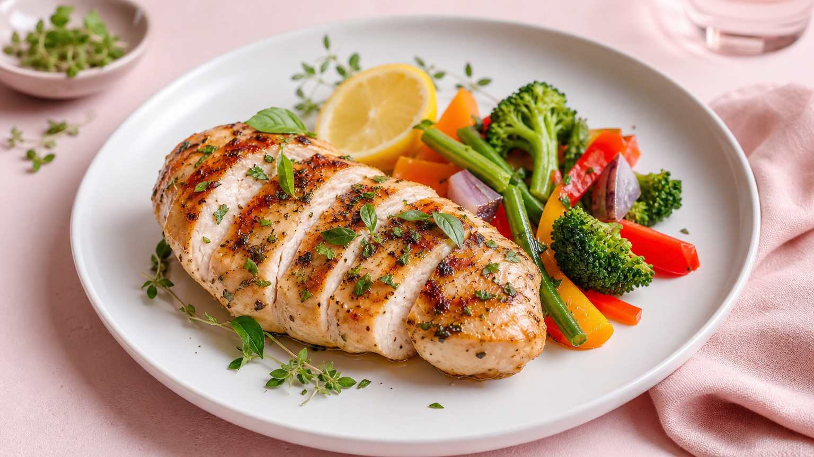

鶏胸肉レシピ人気1位はどれ？まず結論からお伝えします
検索で「鶏胸肉 レシピ 人気 1位」を調べている方が最も知りたいのは「今夜すぐ作れる、おいしくてヘルシーなレシピ」ですよね。
結論から言うと、ダイエット中の女性に圧倒的に支持されているのが「しっとり塩麹蒸し鶏」です。調理時間は約15分、1人分のカロリーは約160kcal。パサつきがちな鶏胸肉がしっとり仕上がる点が人気の理由です。
この記事では人気1位レシピを筆頭に、ヘルシーな鶏胸肉レシピを5つ厳選してご紹介します。
なぜ鶏胸肉がダイエットに向いているの？
鶏胸肉（皮なし）100gあたりの主な栄養素は以下の通りです。
- カロリー：約108kcal
- たんぱく質：約22g
- 脂質：約1.5g
- 糖質：約0g
同じ肉類でも豚バラ肉（約395kcal）や牛ひき肉（約272kcal）と比べると、カロリーが大幅に低いのが特徴です。
たんぱく質は筋肉の維持に欠かせない栄養素。食事制限中に不足しがちなので、鶏胸肉で効率よく補えるのは大きなメリットです。
🍗 鶏胸肉 vs 他の肉類｜カロリー・たんぱく質 徹底比較
※皮なし・100gあたりの目安値
| 食材 | カロリー | たんぱく質 | 脂質 |
|---|---|---|---|
| 鶏胸肉（皮なし）人気No.1 | 約108kcal | 約22g | 約1.5g |
| 鶏もも肉（皮なし） | 約127kcal | 約19g | 約5g |
| 豚ロース（赤身） | 約150kcal | 約21g | 約7g |
| 豚バラ肉 | 約395kcal | 約14g | 約35g |
| 牛ひき肉 | 約272kcal | 約17g | 約21g |
※文部科学省「食品成分データベース」をもとに作成。調理方法により変動します。
人気1位！しっとり塩麹蒸し鶏（約160kcal）
数あるレシピの中でも最も検索・保存されているのが「塩麹蒸し鶏」です。理由はシンプルで、塩麹の酵素がたんぱく質を分解し、鶏胸肉をしっとりやわらかく仕上げてくれるから。
材料（1人分）
- 鶏胸肉（皮なし）：150g
- 塩麹：大さじ1（約18g）
- 酒：大さじ1
- しょうがスライス：2〜3枚
作り方（3ステップ・15分）
- 【5分前】鶏胸肉に塩麹と酒をもみ込み、できれば30分〜一晩冷蔵庫で漬ける（時間がなければ5分でもOK）
- 【調理】耐熱皿にしょうがと一緒に並べ、ふんわりラップをして電子レンジ600Wで4〜5分加熱
- 【仕上げ】そのまま5分蒸らしてから切り分ける。余熱でしっとり仕上がります
薄切りにしてサラダにのせたり、ごまだれをかけたりとアレンジも自在。作り置きにも向いており、冷蔵で3日間保存できます。
人気2位〜5位のヘルシーレシピ一覧
2位：鶏胸肉のピカタ（約200kcal）
薄く切った鶏胸肉に塩こしょうをふり、溶き卵をからめてフライパンで焼くだけ。卵のコーティングが水分を閉じ込め、ふんわり仕上がります。調理時間は約10分。
3位：鶏胸肉のバンバンジー風（約180kcal）
蒸した鶏胸肉をほぐし、きゅうりと一緒にごまだれで和えます。たんぱく質と食物繊維を同時に摂れる一品。夏場は冷やして食べるのがおすすめです。
4位：鶏胸肉のトマト煮込み（約190kcal）
鶏胸肉・カットトマト缶・玉ねぎを煮込むだけのシンプルレシピ。リコピンも一緒に摂れます。作り置きして翌日のランチにも活用できます。
5位：鶏胸肉のレモン塩麹焼き（約170kcal）
塩麹にレモン汁を加えてマリネし、グリルまたはフライパンで焼きます。さっぱりした風味で食欲が落ちる時期にも食べやすいのが特徴です。
パサつかせないための3つのコツ
鶏胸肉が「パサパサになる」という声は多いですが、以下の3点を守るだけで大きく変わります。
- 加熱しすぎない：中心温度が75℃に達したらすぐ火を止め、余熱で仕上げる
- 下味をしっかりつける：塩麹・ヨーグルト・酒などに30分以上漬けると保水力がアップ
- 繊維を断ち切るように切る：肉の繊維に対して垂直に包丁を入れると食感がやわらかくなる
1週間の取り入れ方の目安
毎日同じレシピでは飽きてしまいます。以下のローテーションを参考にしてみてください。
- 月・木：塩麹蒸し鶏（作り置きして2日使い回し）
- 火：バンバンジー風（月曜の作り置きを活用）
- 水：ピカタ（10分で作れるので忙しい日に）
- 金：トマト煮込み（週末の作り置きに）
- 土・日：レモン塩麹焼き or 外食でリフレッシュ
1週間の食事全体を整えたい方は、ダイエットレシピ1週間分の朝昼晩プランも参考にしてみてください。
鶏胸肉レシピをダイエット献立に組み込むポイント
鶏胸肉だけを食べ続けるのではなく、野菜・炭水化物・発酵食品とバランスよく組み合わせることが大切です。
たとえば夕食に塩麹蒸し鶏＋玄米小盛り＋みそ汁＋サラダの組み合わせは、たんぱく質・食物繊維・発酵食品をまとめて摂れる理想的な構成です。
1週間の献立全体を見直したい方は、ダイエット献立1週間プランもあわせてチェックしてみてください。
Q. 鶏胸肉は毎日食べても大丈夫ですか？
毎日食べること自体は問題ありませんが、同じ食材ばかりに偏ると栄養バランスが崩れることがあります。週3〜5回を目安に、魚や豆腐・卵などほかのたんぱく源と組み合わせるのがおすすめです。
Q. 鶏胸肉は皮ありと皮なし、どちらを選ぶべきですか？
カロリーを抑えたい場合は皮なしを選ぶと効果的です。皮ありは100gあたり約190kcal、皮なしは約108kcalと約80kcalの差があります。ただし皮を取り除くだけでも十分なので、スーパーで皮つきしか手に入らない場合は調理前に外すだけでOKです。
Q. 塩麹がない場合、代わりに何を使えますか？
塩麹の代わりに「ヨーグルト大さじ2＋塩少々」でも同様のしっとり効果が得られます。ヨーグルトの乳酸菌がたんぱく質を分解し、やわらかく仕上げてくれます。みそ（小さじ1）＋酒でも代用可能です。